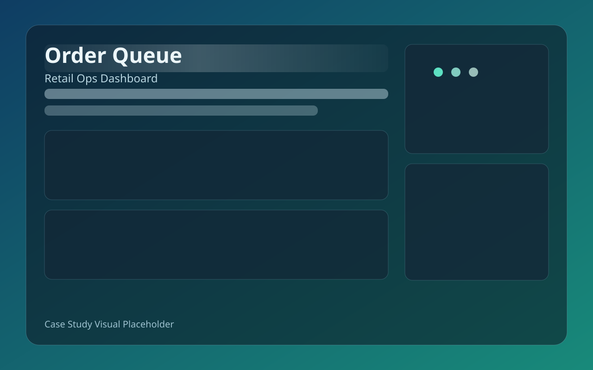
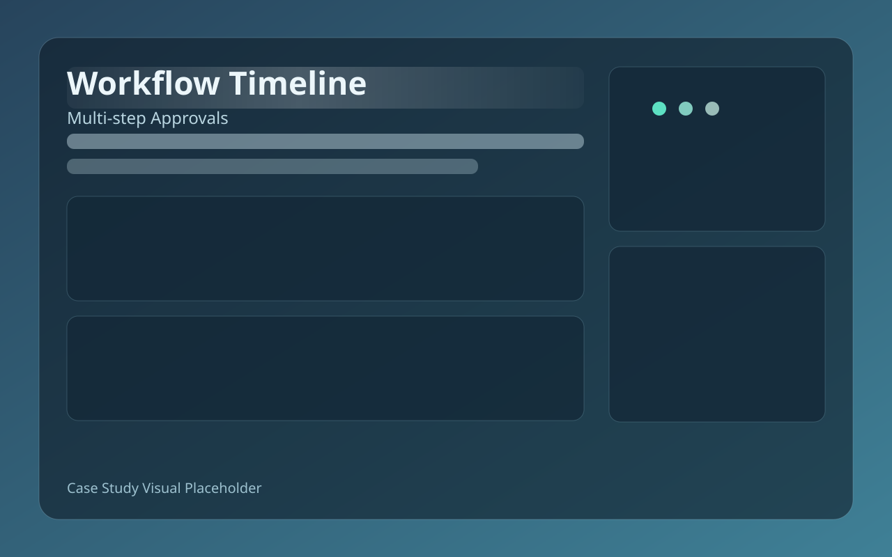
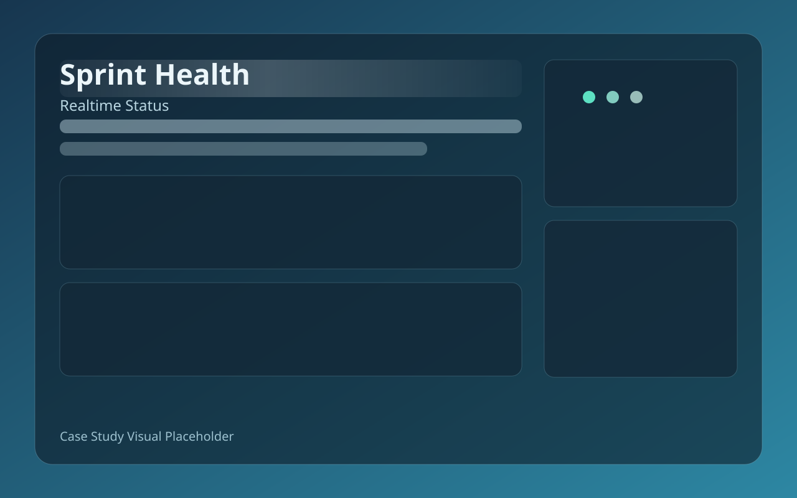

Stack
React, Next.js, TypeScript, UI systems
- Frontend kiến trúc rõ ràng, ưu tiên maintainability
- Làm việc tốt với REST API, state management và UX flow
Final-year CS Student · Frontend-focused
Mình là Thư High, sinh viên năm 4 ngành CNTT. Mình tập trung vào Frontend và xây các case-study thực tế để chứng minh năng lực triển khai sản phẩm từ UI đến logic.
Không nói chung chung, luôn đi từ bài toán tới kết quả.
Ưu tiên maintainability, dễ review, dễ mở rộng.
Giao tiếp rõ, chủ động nhận feedback và iterate nhanh.
Recruiter Fast Lane
Nếu bạn cần ra quyết định nhanh, hãy đi theo 3 mục dưới đây: CV snapshot, case study nổi bật và thông tin liên hệ để đặt lịch demo private project.
Giới thiệu
Mình không dùng portfolio để “trang trí”, mà dùng để thể hiện cách giải quyết vấn đề. Mỗi project đều có bối cảnh, ràng buộc, quyết định kỹ thuật và kết quả cụ thể.
Trong team, mình có thể nhận các task frontend production-level: xây component chuẩn, tích hợp API, tối ưu UX và xử lý lỗi giao diện theo checklist rõ ràng.
CV Snapshot
React, Next.js, TypeScript, UI systems
4 case studies có cả public và private/NDA
Không chỉ tool list, tập trung năng lực triển khai
Sinh viên năm 4 · Khoa học máy tính
Seeking Internship / Junior Frontend
JD Fit
Bảng này giúp recruiter đối chiếu nhanh yêu cầu JD với bằng chứng từ case study.
Thiết kế layout có hierarchy, chia component dễ maintain, chuẩn hóa token và trạng thái UI.
Xem bằng chứngTách state theo domain, giảm side-effects, hỗ trợ scale codebase và onboarding nhanh.
Xem bằng chứngƯu tiên readability và conversion, cắt hiệu ứng dư thừa, giữ trải nghiệm mượt trên mobile.
Xem bằng chứngCó kinh nghiệm phối hợp PM/QA/Designer, trình bày decision log và xử lý trade-off kỹ thuật.
Xem bằng chứngWhy I’m Junior-Ready
Có public và private project, trình bày được decision từ problem đến impact.
Luôn đi theo user flow, business constraints và release quality checklist.
Xây component system rõ ràng, dễ maintain và dễ onboard trong team.
Sẵn sàng nhận test task, walkthrough kiến trúc và live coding khi cần.
Có thể xem repo highlights và commit history để đánh giá thói quen code, cách đặt tên, structure và khả năng maintain.
Xem GitHub contributions & repo highlightsRecruiter FAQ
Có, sẵn sàng làm test task và giải thích approach chi tiết.
Có thể demo trực tiếp trong buổi phỏng vấn theo phạm vi NDA.
Có, linh hoạt lịch part-time/full-time theo giai đoạn học kỳ.
Kỹ năng
Dự án
Tập trung vào vấn đề, giải pháp và kết quả, không làm phô hiệu ứng.
Mỗi dự án đều có phần case study riêng. Với repo private/NDA, bạn vẫn xem được bối cảnh, kiến trúc, quyết định kỹ thuật và kết quả triển khai.

Case StudyThiết kế lại dashboard theo flow thao tác thật của đội vận hành, giảm số bước xử lý đơn hàng và tăng độ rõ dữ liệu theo vai trò.

NDA CaseDự án dành cho doanh nghiệp, xử lý form phức tạp, phân quyền và workflow nhiều bước. Repo không public theo NDA.
Thiết kế landing page theo mục tiêu tuyển dụng, tập trung vào readability, tốc độ tải và khả năng mở rộng nội dung HR.

Product CaseHệ thống quản lý task với màn hình tổng hợp tiến độ, cảnh báo nghẽn và dashboard theo sprint cho PM và Engineer.
Hành trình
Định hướng Frontend / Product Engineering
Tập trung hệ thống hóa 4 case study theo chuẩn recruiter: problem, constraints, kiến trúc, kết quả và bài học kỹ thuật.
Team 3-6 thành viên
Triển khai các dự án có độ phức tạp tăng dần: dashboard, workflow nội bộ, landing page tuyển dụng, task workspace.
Luyện thuật toán + web fundamentals
Rèn nền tảng HTML/CSS/JavaScript, sau đó chuyển sang React và TypeScript để làm các bài toán sản phẩm thực tế hơn.
Cách làm việc
Chốt rõ user flow, success metric, phạm vi và rủi ro.
Tách component, state, API contract trước khi code.
Code sạch, test điểm rủi ro cao, review theo checklist.
Đọc số liệu thật rồi tối ưu vòng tiếp theo.
Liên hệ
Mình ưu tiên vị trí Internship / Junior Frontend. Có thể gửi CV PDF, transcript và walkthrough dự án private qua email theo yêu cầu.